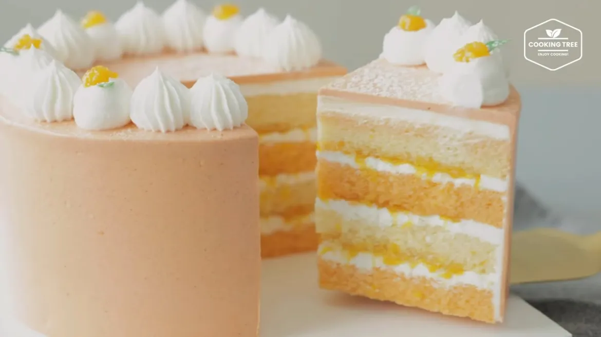

Orange Cake * Swiss Meringue Buttercream

A simple, but marvelous orange cake. The cake itself is a four-layered genoise sponge cake.
The cream is a swiss meringue buttercream which gives the cake a silky smooth and light feel.
Orange is infused through the cake by incorporating zest into the cake sheet and an orange puree made
from fresh oranges.
Ingredients
- 260g Eggs (about 5 eggs)
- 210g Sugar
- 5g Vanilla Extract
- 100g Unsalted Butter
- Orange Zest
- 150g Warm Milk (about 50C)
- 7g Lemon juice
- 250g All-purpose flour
- 6g Baking powder
- 300g Oranges (about 3 oranges)
- 60g Sugar
- 110g Egg white (about 3 eggs)
- 180g Sugar
- 1g Salt
- 320g Unsalted butter
- 7g Cointreau
Steps
- Place a bowl of eggs in a pot of hot water, add sugar and vanilla extract, and stir to raise the temperature
to about 40 degrees.
- Take out the bowl with the egg and place the bowl with butter on the pot to raise the temperature (about 50
to 60 degrees).
- Whip the eggs in the order of high speed, medium speed, and low speed to make a dense foam.
- Divide the wheat flour and baking powder into 2 parts and sieve them. Mix until raw flour is no longer
visible.
- Add lemon juice to warm milk (about 50 degrees) and mix, then add to the dough and mix.
- Add a part of the dough to the butter melted in a hot water bath and mix, then put it back into the dough
and mix evenly.
- Pour half of the dough into the oven pan, add the orange pigment to the remaining dough, mix, and pour into
another oven pan.
- (If you add color to the dough and mix it, the volume will decrease, so it is better if you leave a little
more of the dough with the color in it)
- Beat to remove large air bubbles, bake in an oven at 170 degrees (preheated to 190 degrees) for about 40
minutes, take it out, turn it over, and cool.
- Separate only the orange flesh put it in a saucepan, add sugar, and simmer until thickened (over low heat
for at least 10 minutes).
- Add lemon juice and boil a little more, then cool it in the refrigerator and put it in a piping bag.
- Mix the egg whites with sugar and salt, then place them in a pot of boiling water and boil it to 70 degrees
while stirring.
- Remove from the pot and whip to make a hard meringue. (Cool the meringue to about 30 degrees)
- Add one or two pieces of room temperature butter at a time and whip enough. Lastly, add orange Cointreau
and whip a little more.
- Remove the top and bottom sides of the cake sheet and cut it into 2 pieces to prepare a total of 4 sheets.
(I removed the burn color from the edge of the sheet and used it, but it's okay to use it as is)
- Put a little cream for decoration on the top, put an orange sheet on a spinning wheel, and sprinkle syrup.
- Flatten with cream, top with orange puree, flatten, place the vanilla sheet on top, and repeat.
- After icing with buttercream, harden in the refrigerator for about 30 minutes.
- Add color to the remaining cream to make orange cream, and apply to the cake and icing.
- Squeeze the white cream on the top using a tip (No. 865, round tip) and put it in the refrigerator for
about 10 minutes.
- Dig out the top of the cream squeezed with a round tip, make a groove, and put the orange puree.